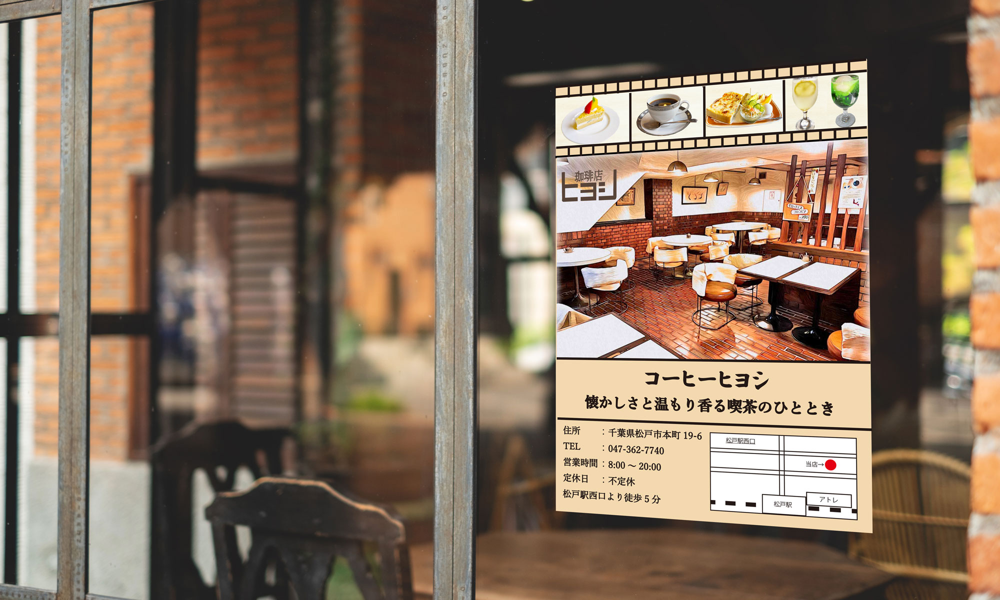

Graphic

コーヒーヒヨシ
千葉県松戸市に実際にある喫茶店のポスターを制作させていただきました。
Link→コーヒーヒヨシ
- コンセプト
- 松戸市にある創業43年の昔ながらの喫茶店で注文を受けてから1杯ずつ丁寧にコーヒーを淹れている
- 目的
- 松戸駅周辺にポスターを配置し、お店の認知度を増やす為ポスターを制作しました。
- 配置場所(想定)
- 松戸駅構内・居酒屋ヒヨシ
- ターゲット
- ・松戸市在住または、松戸駅近郊の会社に勤めている人
・喫茶店に興味のある人(20代～)
- デザイン
- 『昔ながらの喫茶店』ということ、また年齢層が高い方にも親しみやすいようレトロなデザインにしました。
- 制作範囲・期間
- 2時間
使用したツール